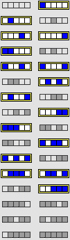
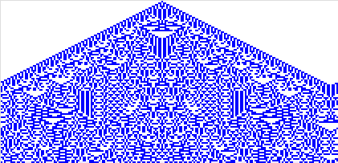

(a) Enter this rule and grow the CA pattern from a single live cell near the middle of the first generation. Note the pattern, shown here.
|  |  |
Repeat (a), but take the first generation to be two live cells side-by-side. Experiment with different initial configurations. Do you see any pattern?
Here is the answer.
Return to Cellular Automata Explorations.